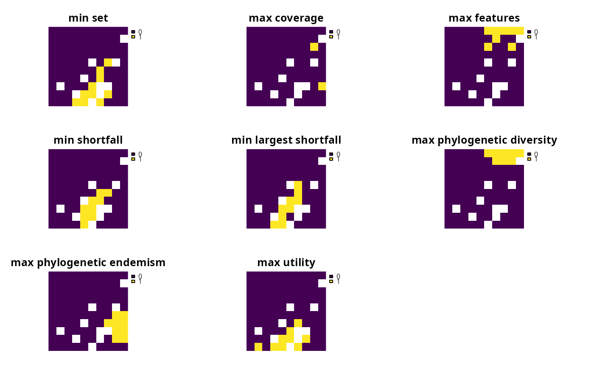

An objective is used to specify the overall goal of a conservation planning
problem. All conservation planning problems involve minimizing #' or maximizing some kind of objective. For instance, the planner may require
a solution that conserves enough habitat for each species while minimizing
the overall cost of the reserve network. Alternatively, the planner may
require a solution that maximizes the number of conserved species while
ensuring that the cost of the reserve network does not exceed the budget.
Please note that failing to specify an objective before attempting to solve a problem will return an error.
The following objectives can be added to a conservation planning
problem:
add_min_set_objectiveMinimize the cost of the solution whilst ensuring that all targets are met. This objective is similar to that used in Marxan.
add_max_cover_objectiveRepresent at least one instance of as many features as possible within a given budget.
add_max_features_objectiveFulfill as many targets as possible while ensuring that the cost of the solution does not exceed a budget.
add_max_phylo_objectiveMaximize the phylogenetic diversity of the features represented in the solution subject to a budget.
add_max_utility_objectiveSecure as much of the features as possible without exceeding a budget.
constraints, decisions,
penalties, portfolios, problem,
solvers, targets.
# load data data(sim_pu_raster, sim_features, sim_phylogeny) # create base problem p <- problem(sim_pu_raster, sim_features) %>% add_relative_targets(0.1) # create problem with added minimum set objective p1 <- p %>% add_min_set_objective() # create problem with added maximum coverage objective # note that this objective does not use targets p2 <- p %>% add_max_cover_objective(500) # create problem with added maximum feature representation objective p3 <- p %>% add_max_features_objective(1500) # create problem with added maximum phylogenetic representation objective p4 <- p %>% add_max_phylo_objective(1900, sim_phylogeny) # create problem with added maximum utility objective # note that this objective does not use targets p5 <- p %>% add_max_utility_objective(5000)# solve problems s <- stack(solve(p1), solve(p2), solve(p3), solve(p4), solve(p5))#> Optimize a model with 5 rows, 90 columns and 450 nonzeros #> Variable types: 0 continuous, 90 integer (90 binary) #> Coefficient statistics: #> Matrix range [2e-01, 9e-01] #> Objective range [2e+02, 2e+02] #> Bounds range [1e+00, 1e+00] #> RHS range [3e+00, 8e+00] #> Found heuristic solution: objective 2337.9617505 #> Presolve time: 0.00s #> Presolved: 5 rows, 90 columns, 450 nonzeros #> Variable types: 0 continuous, 90 integer (90 binary) #> Presolved: 5 rows, 90 columns, 450 nonzeros #> #> #> Root relaxation: objective 1.924252e+03, 13 iterations, 0.00 seconds #> #> Nodes | Current Node | Objective Bounds | Work #> Expl Unexpl | Obj Depth IntInf | Incumbent BestBd Gap | It/Node Time #> #> 0 0 1924.25198 0 4 2337.96175 1924.25198 17.7% - 0s #> H 0 0 1979.9609382 1924.25198 2.81% - 0s #> #> Explored 1 nodes (13 simplex iterations) in 0.00 seconds #> Thread count was 1 (of 4 available processors) #> #> Solution count 2: 1979.96 2337.96 #> #> Optimal solution found (tolerance 1.00e-01) #> Best objective 1.979960938178e+03, best bound 1.924251977336e+03, gap 2.8136%#> Warning: ignoring targets since the maximum coverage objective function doesn't use targets#> Optimize a model with 6 rows, 95 columns and 545 nonzeros #> Variable types: 0 continuous, 95 integer (95 binary) #> Coefficient statistics: #> Matrix range [2e-01, 2e+02] #> Objective range [1e-04, 1e+00] #> Bounds range [1e+00, 1e+00] #> RHS range [5e+02, 5e+02] #> Found heuristic solution: objective -0.0000000 #> Presolve removed 1 rows and 1 columns #> Presolve time: 0.00s #> Presolved: 5 rows, 94 columns, 454 nonzeros #> Variable types: 0 continuous, 94 integer (94 binary) #> Presolved: 5 rows, 94 columns, 454 nonzeros #> #> #> Root relaxation: objective 3.999782e+00, 4 iterations, 0.00 seconds #> #> Nodes | Current Node | Objective Bounds | Work #> Expl Unexpl | Obj Depth IntInf | Incumbent BestBd Gap | It/Node Time #> #> 0 0 3.99978 0 2 -0.00000 3.99978 - - 0s #> H 0 0 2.9997849 3.99978 33.3% - 0s #> H 0 0 3.9997835 3.99978 0.00% - 0s #> #> Explored 1 nodes (4 simplex iterations) in 0.00 seconds #> Thread count was 1 (of 4 available processors) #> #> Solution count 3: 3.99978 2.99978 -0 #> #> Optimal solution found (tolerance 1.00e-01) #> Best objective 3.999783501891e+00, best bound 3.999783501891e+00, gap 0.0000% #> Optimize a model with 6 rows, 95 columns and 545 nonzeros #> Variable types: 0 continuous, 95 integer (95 binary) #> Coefficient statistics: #> Matrix range [2e-01, 2e+02] #> Objective range [1e-04, 1e+00] #> Bounds range [1e+00, 1e+00] #> RHS range [2e+03, 2e+03] #> Found heuristic solution: objective -0.0000000 #> Presolve removed 4 rows and 4 columns #> Presolve time: 0.00s #> Presolved: 2 rows, 91 columns, 181 nonzeros #> Variable types: 0 continuous, 91 integer (91 binary) #> Presolved: 2 rows, 91 columns, 181 nonzeros #> #> #> Root relaxation: objective 9.992214e-01, 9 iterations, 0.00 seconds #> #> Nodes | Current Node | Objective Bounds | Work #> Expl Unexpl | Obj Depth IntInf | Incumbent BestBd Gap | It/Node Time #> #> 0 0 0.99922 0 1 -0.00000 0.99922 - - 0s #> H 0 0 0.9992051 0.99922 0.00% - 0s #> #> Explored 1 nodes (9 simplex iterations) in 0.00 seconds #> Thread count was 1 (of 4 available processors) #> #> Solution count 2: 0.999205 -0 #> #> Optimal solution found (tolerance 1.00e-01) #> Best objective 9.992050853811e-01, best bound 9.992214035085e-01, gap 0.0016% #> Optimize a model with 14 rows, 103 columns and 567 nonzeros #> Variable types: 0 continuous, 103 integer (103 binary) #> Coefficient statistics: #> Matrix range [2e-01, 2e+02] #> Objective range [5e-06, 9e-01] #> Bounds range [1e+00, 1e+00] #> RHS range [2e+03, 2e+03] #> Found heuristic solution: objective -0.0000000 #> Presolve removed 5 rows and 5 columns #> Presolve time: 0.00s #> Presolved: 9 rows, 98 columns, 557 nonzeros #> Variable types: 0 continuous, 98 integer (98 binary) #> Presolved: 9 rows, 98 columns, 557 nonzeros #> #> #> Root relaxation: objective 4.334244e+00, 30 iterations, 0.00 seconds #> #> Nodes | Current Node | Objective Bounds | Work #> Expl Unexpl | Obj Depth IntInf | Incumbent BestBd Gap | It/Node Time #> #> 0 0 4.33424 0 6 -0.00000 4.33424 - - 0s #> H 0 0 2.1552838 4.33424 101% - 0s #> H 0 0 2.3499578 4.33424 84.4% - 0s #> 0 0 4.21815 0 6 2.34996 4.21815 79.5% - 0s #> 0 0 4.21750 0 8 2.34996 4.21750 79.5% - 0s #> 0 0 3.33278 0 5 2.34996 3.33278 41.8% - 0s #> H 0 0 2.7445296 3.33278 21.4% - 0s #> H 0 0 2.9392026 3.33278 13.4% - 0s #> 0 1 3.02218 0 5 2.93920 3.02218 2.82% - 0s #> #> Cutting planes: #> Cover: 1 #> #> Explored 1 nodes (50 simplex iterations) in 0.02 seconds #> Thread count was 1 (of 4 available processors) #> #> Solution count 5: 2.9392 2.74453 2.34996 ... -0 #> #> Optimal solution found (tolerance 1.00e-01) #> Best objective 2.939202641202e+00, best bound 3.022181976970e+00, gap 2.8232%#> Warning: ignoring targets since the maximum coverage objective function doesn't use targets#> Optimize a model with 6 rows, 95 columns and 545 nonzeros #> Variable types: 5 continuous, 90 integer (90 binary) #> Coefficient statistics: #> Matrix range [2e-01, 2e+02] #> Objective range [1e-04, 1e+00] #> Bounds range [1e+00, 7e+01] #> RHS range [5e+03, 5e+03] #> Found heuristic solution: objective -0.0000000 #> Presolve removed 5 rows and 5 columns #> Presolve time: 0.00s #> Presolved: 1 rows, 90 columns, 90 nonzeros #> Variable types: 0 continuous, 90 integer (90 binary) #> Presolved: 1 rows, 90 columns, 90 nonzeros #> #> #> Root relaxation: objective 7.458805e+01, 1 iterations, 0.00 seconds #> #> Nodes | Current Node | Objective Bounds | Work #> Expl Unexpl | Obj Depth IntInf | Incumbent BestBd Gap | It/Node Time #> #> 0 0 74.58805 0 1 -0.00000 74.58805 - - 0s #> H 0 0 74.1182614 74.58805 0.63% - 0s #> #> Explored 1 nodes (1 simplex iterations) in 0.00 seconds #> Thread count was 1 (of 4 available processors) #> #> Solution count 2: 74.1183 -0 #> #> Optimal solution found (tolerance 1.00e-01) #> Best objective 7.411826135798e+01, best bound 7.458804589340e+01, gap 0.6338%# plot solutions plot(s, axes = FALSE, box = FALSE, main = c("minimum set", "maximum coverage", "maximum representation", "phylogenetic representation", "maximum utility"))